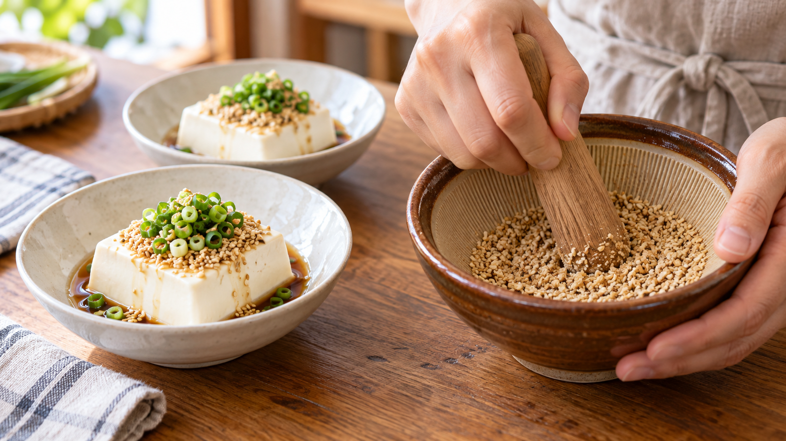

いりごまは食べる直前に軽くする｜冷ややっこの香りを引き出すコツ
冷ややっこにいりごまをパラパラと振ったとき、思っていたより香ばしさを感じにくいことがあります。見た目にはごまが乗っていても、口に運んだときにふわっと香りが広がらない。少しもったいないですよね。
ごまの香りを楽しみたいなら、食べる直前に軽くすって粒を割ってみてください。 食卓に出す直前のひと手間で、香りを感じやすくなります。
粒を割ると、内側が表に出る
ごまの粒の中には、油をたくわえた小さな区画が集まっています。ごまの内部を観察した研究でも、その様子が見られました。
粒を軽くすって割ると、油を含む内側が表に出ます。閉じていた小さな容器を開けるように、香りを感じる機会が増える、と考えると分かりやすいでしょう。細かい粉にする必要はありません。粒の一部を割れば、残った粒のプチッとした食感も楽しめます。
研究で分かった、ごまの香りと時間の関係
すりたてのいりごまを調べた研究では、空気中へ出やすい香りの成分が確認されました。また、いりごまとすりごまの保存を調べた研究では、時間がたった加工ごまの香ばしさが弱まり、古いにおいも感じられるようになりました。大学の別の研究も、すったごまの香りと油の状態が保存中に変わると報告しています。
ここから家庭で使えるのは、「香りを主役にしたい一皿では、食べるころにする」という考え方です。すりごまを常備する便利さはそのままに、冷ややっこのように仕上げの香りを楽しむ料理では、粒からすって使いましょう。なお、いりごまの香りを調べた研究では、香りは煎り方によっても変わっています。
今夜作る、すりたてごまの冷ややっこ
2人分の材料は、絹ごし豆腐300g、白いりごま小さじ2、しょうゆ小さじ2、刻みねぎ適量です。
- 豆腐の水気をペーパータオルなどで軽く切り、2つの器に分けます。
- 食べる直前に、いりごまをすり鉢に入れ、粒が半分ほど割れるまで軽くすります。ごまミルなら短く数回回します。
- 豆腐にすりたてのごまをのせ、しょうゆを回しかけて刻みねぎを添えます。
ごまを細かく練るより、少し粒を残したほうが、この冷ややっこでは食感も楽しめます。
ごまあえにも、同じひと手間を
ほうれん草のごまあえを作るときも、ゆでたほうれん草と調味料を和える直前にごまをすってみてください。香りを衣全体にまとわせながら、食べるまでの時間を短くできます。ごまを「いつするか」で料理の仕上がりを考える、家庭での応用です。
まとめ
香りを楽しむ一皿では、いりごまを使う直前に軽くする。今夜の冷ややっこなら、豆腐を器に盛ってからごまをすれば十分です。